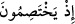
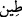
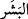
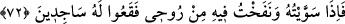

Bu âyet, (
) yâni “tartışırlarken” ifâdesinden bedel olup burada tartışmanın
mâhiyetine geçilmektedir.
Şayet, Allah’la atışıp tartışmak (muhâsama) küfür olduğu halde meleklerin, Allah’ın
böyle bir beyânına karşılık verdiği nasıl söylenebilir, diyecek olursanız, şöyle deriz:
Hiç şüphe yoktur ki burada bir sual-cevap faslı geçmekte olup bu da bir münâzara ve
atışmaya benzemektedir. İşte bu benzerlik “müşebbeh bihî” olan atışmanın “müşebbeh”
olan sual-cevap için kullanılmasını mümkün kılmıştır. Böylece o yüce topluluk arasında
cereyan eden söz alış verişi (mukâvele) için “atışma” lafzının kullanılması güzel
olmuştur.
Şayet, yukarıda zikredilen “atışma” yüce topluluğa isnâd edilmiş ve onların arasında
vukû bulurken; bedel cümlesinde geçen söz alış-verişi ise Allah’la melekler arasında
geçmektedir. Çünkü yukarıdaki beyânı Allah yapmış ve melekler de buna cevap
vermişlerdir. O halde bu cümleyi, nasıl olur da ‘tartışırlarken’ ifâdesini açıklayan bir
bedel yaparsınız? diye soracak olursanız, şöyle cevap veririz:
Cenab-ı Hakk’ın onlarla konuşması bir melek vâsıtasıyla cereyan ettiği için o meleği
konuşturanın Allah olması hasebiyle “atışma” Allah’a isnâd edilebilmiştir. Buradaki
meleklerden maksadın ne olduğu ise Hicr Sûresi’nde geçmişti, oraya bakınız.
“Rabbin meleklere demişti ki: Ben” ileride “muhakkak çamurdan bir insan
yaratacağım.”
(
), nemli toprak demektir. Büyüklerden birine göre ise ifâde, “acziyet ve zaaftan
yaratacağım” anlamındadır. Nitekim bir başka âyette, “Allah, sizi güçsüz olarak
yaratandır” (er-Rûm 30/54) buyurulmaktadır. Derler ki: Toprağın makamı tevâzu ve
miskinlik; tevâzuun makamı ise sebat ve rif’attir. “Tevâzu eden yükselir”[45] ifâdesi
bunun için söylenmiştir. Hz. Peygamber’in (s.a.) duâlarından biri de şu şekilde idi:
“Allahım! Beni miskin olarak dirilt, miskin olarak öldür.”[46]
Râğıb der ki: İnsan derisinin, saçların bitim yerinden başlayarak ortaya çıkışı esas
alınarak insandan “beşer” diye bahsedilmektedir. Zira (
), cildin dışıdır, fakat yün,
kıl veya kalın derileri bulunan hayvanlar böyle değildir.
Hakikat erbabı biri de der ki: Âdem’e, “beşer” denmesinin sebebi, onun yaratılışı
esnâsında Allah’ın -kendi cenâbına uygun bir şekilde ve yaratıklarına benzetilme
tevehhümlerinden münezzeh olarak- bizzat kendi elleriyle doğrudan mübâşeret etmiş
olmasıdır. Çünkü mübâşeret lafzı, iki tenin biribirine değmesi anlamında mecazdışı
(hakikat) bir kelime olup cinsel ilişkiye de bu sebeple kinâye yoluyla “mübâşeret”
denir.
72. Onu tamamlayıp, içine de ruhumdan üfürdüğüm zaman, derhal ona secdeye